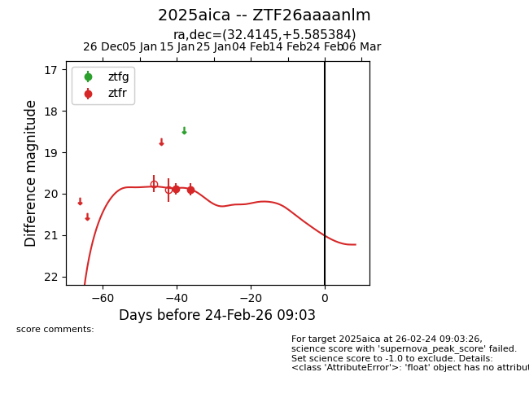
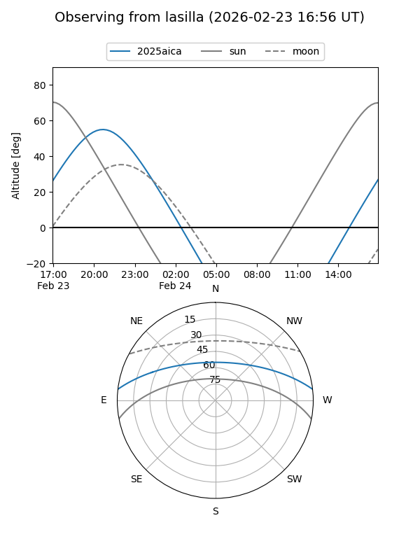
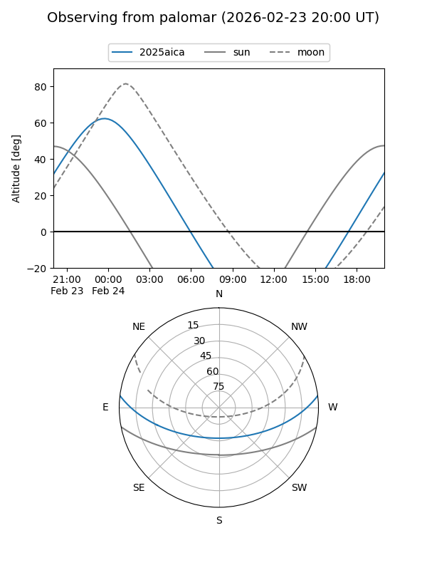
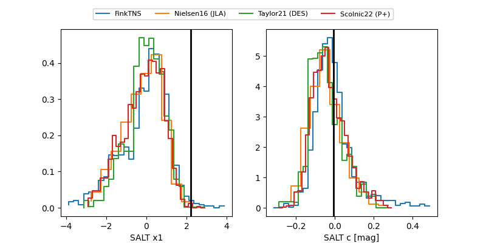

2025aica
Target 2025aica at 2026-01-15 08:20
Aliases and brokers:
FINK: link
Lasair: link
ALeRCE: link
TNS: link
YSE: link
alt names
ZTF26aaaanlm (ztf,fink_ztf)
2025aica (tns,yse)
Coordinates:
equatorial (ra, dec) = 32.4145,+5.58538
equatorial (HMS+DMS) = 02:09:39.48,+05:35:07.38
galactic (l, b) = (155.8657,-52.21280)
Flags:
Photometry:
last ztfr=19.88
1 ztfr detections
Lightcurve

Visibility


Additional plots
